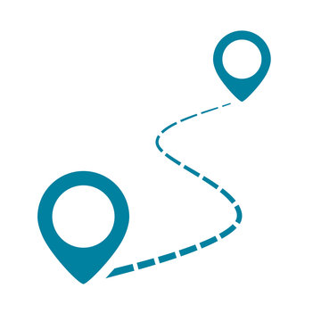

Instructions
1 Select a starting and ending cell on the grid..
2 When you click on an empty cell, it will turns into a wall.
3 Pick an algorithm and opt for animation and click on Visualize to observe its execution.
Additional features:
Generating random walls for convenience, which can be toggled
Clearing the path if desired. The ability to choose a new algorithm and watch its visualization after
clearing the
path.
